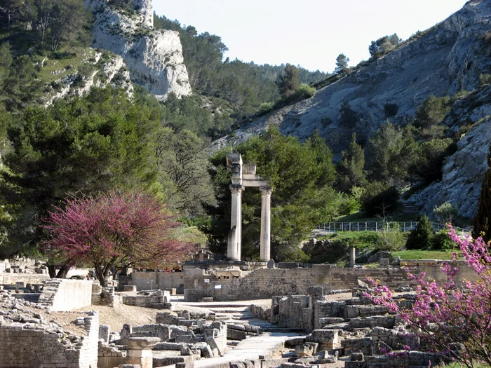

arrow_backAvant les Romains, avant les Grecs — les Salyens, peuple celto-ligure, venaient ici soigner leurs maux. La source sacree du dieu guerisseur Glan est le point de depart de toute l'histoire de Saint-Remy.
C'est autour de cette source que naquit la cite de Glanum au VIe siecle avant notre ere. L'eau y etait consideree comme divine, chargee de pouvoirs guerisseurs. On venait de tout le bassin mediterraneen pour boire a cette source et invoquer Glan.
Enouie lors de la destruction de la cite en 260, la source coule pourtant encore aujourd'hui, a 50 metres sous le forum antique. On peut l'entendre dans les parties basses du site de Glanum lors des visites — un murmure de 2600 ans d'histoire.